编译原理第4章：自顶向下的语法分析
1 自顶向下分析概述
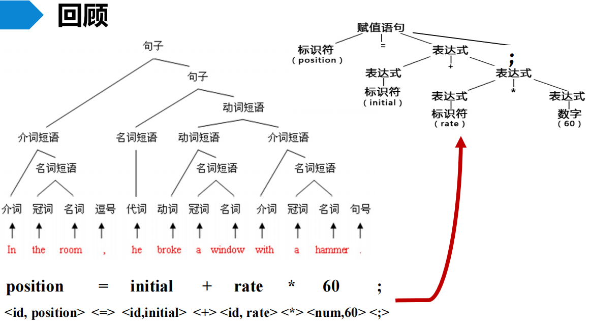
从分析树的顶部（根节点）向底部（叶节点）方向构造分析树，可以看成是从文法开始符号推导出词串的过程。
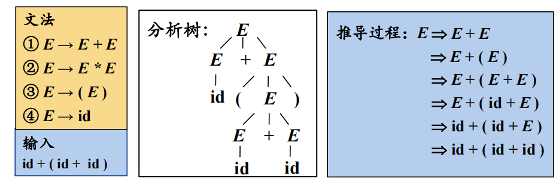
每一步推导中，都需要做两个选择：
- 替换当前句型中的哪个非终结符
- 用该非终结符的哪个候选式进行替换
1.1 最左推导
在最左推导中，总是选择每个句型的最左非终结符进行替换。
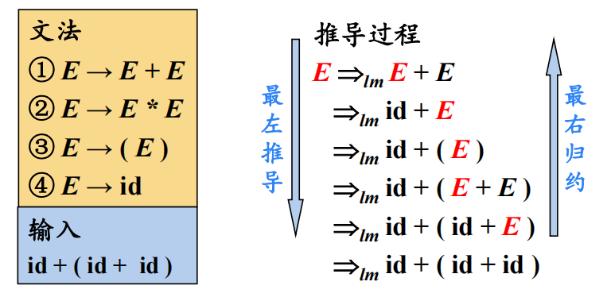
如果，则称是当前文法的最左句型（left-sentential form）。
1.2 最右推导
在最右推导中，总是选择每个句型的最右非终结符进行替换。
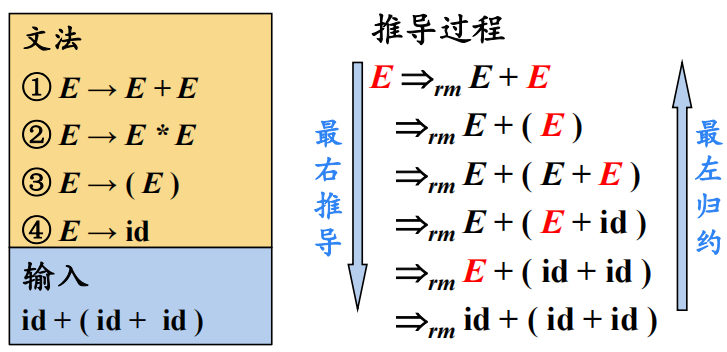
在自底向上的分析中，总是采用最左归约的方式，因此把最左归约称为规范归约，而最右推导相应地称为规范推导。
1.3 最左推导和最右推导的唯一性
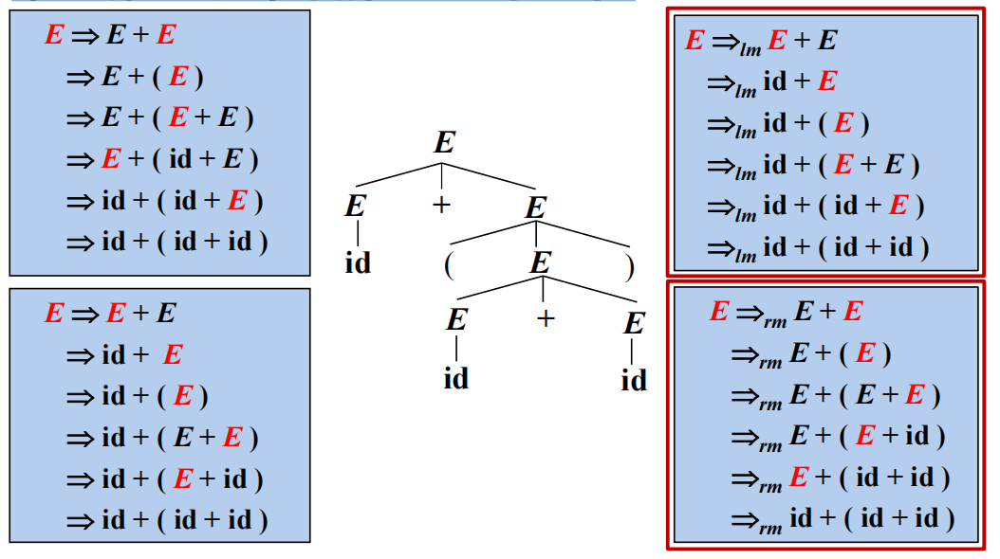
如果最左推导和最右推导生成的语法树不是唯一的，那么这个文法就有二义性。
1.3.1 自顶向下的语法分析采用最左推导方式
- 总是选择每个句型的最左非终结符进行替换
- 根据输入流中的下一个终结符，选择最左非终结符的一个候选式
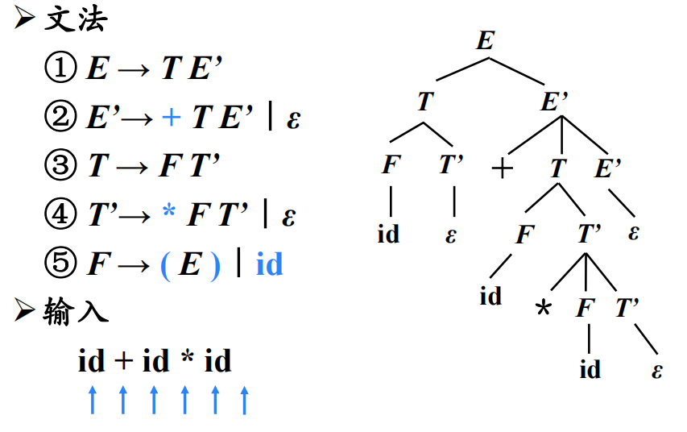
1.4 自顶向下语法分析的通用形式
1.4.1 递归下降分析
- 由一组过程组成，每个过程对应一个非终结符
- 从文法开始符号对应的过程开始，其中递归调用文法中其它非终结符对应的过程。如果对应的过程体恰好扫描了整个输入串，则成功完成语法分析
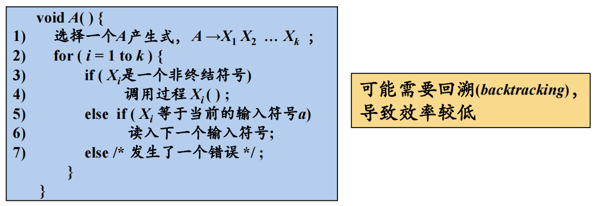
1.5 预测分析
预测分析是递归下降分析技术的一个特例，通过在输入中向前看固定个数（通常是一个）符号来选择正确的A-产生式。
可以对某些文法构造出向前看个输入符号的预测分析器，该类文法有时也称为LL(k) 文法类。
预测分析不需要回溯，是一种确定的自顶向下分析方法。
2 文法转换
左递归文法会使递归下降分析器陷入无限循环，含有形式产生式的文法称为是直接左递归的(immediate left recursive)。
如果一个文法中有一个非终结符使得对某个串存在，那么这个文法就是左递归的。
经过两步或两步以上推导产生的左递归称为是间接左递归的。
2.1 消除左递归
2.1.1 消除直接左递归
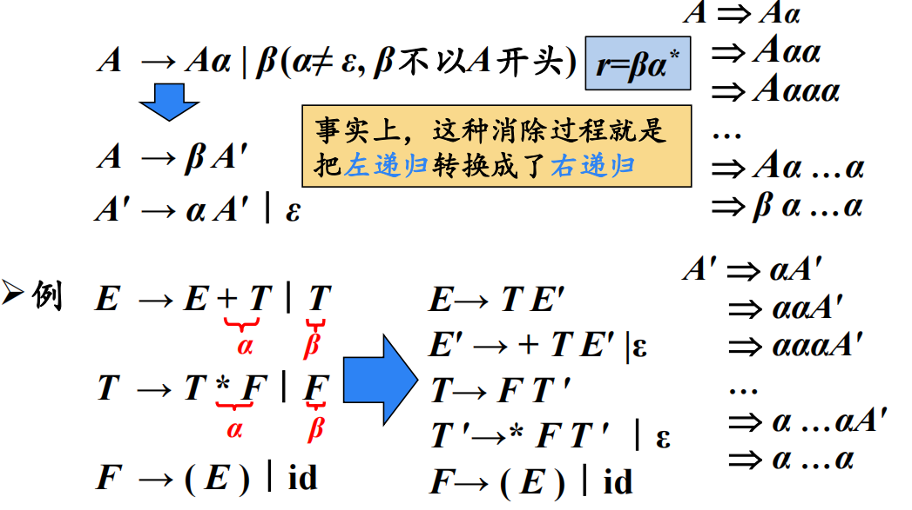
2.1.2 消除直接左递归的一般形式
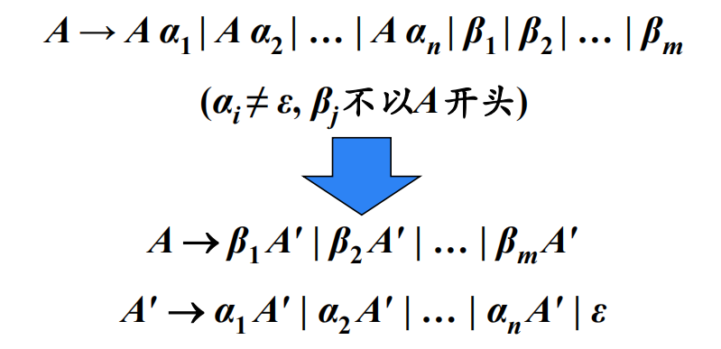
消除左递归是要付出代价的——引进了一些非终结符和ε_产生式。
任何事情都不是两全其美的，当你获得一些东西的时候，必然也会失去其他东西。
2.1.3 消除间接左递归
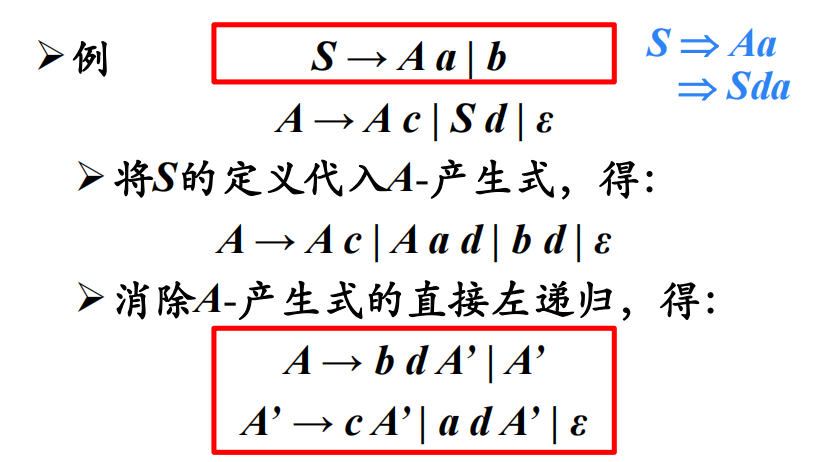
2.1.4 消除左递归算法
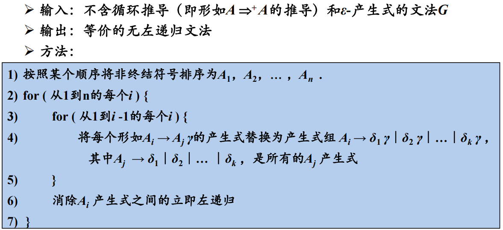
2.2 提取左公因子
同一非终结符的多个候选式存在共同前缀，或含有左递归将导致回溯现象。
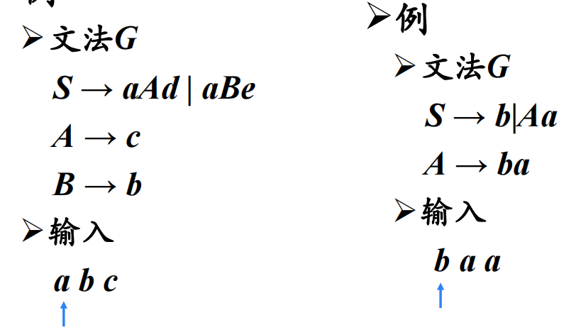
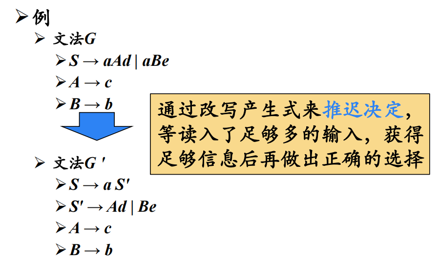
2.2.1 提取左公因子算法
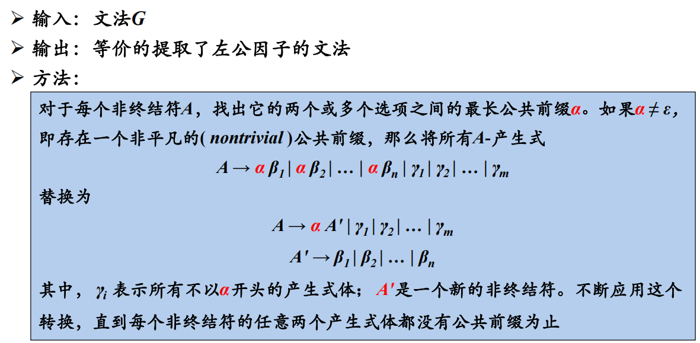
3 LL(1)文法
3.1 S_文法
预测分析法的工作过程：
从文法开始符号出发，在每一步推导过程中根据当前句型的最左非终结符和当前输入符号，选择正确的A-产生式。
为保证分析的确定性，选出的候选式必须是唯一的。
S_文法是一种简单的确定性文法，要求如下：
- 每个产生式的右部都以终结符开始
- 同一非终结符的各个候选式的首终结符都不同
- S_文法不含 产生式
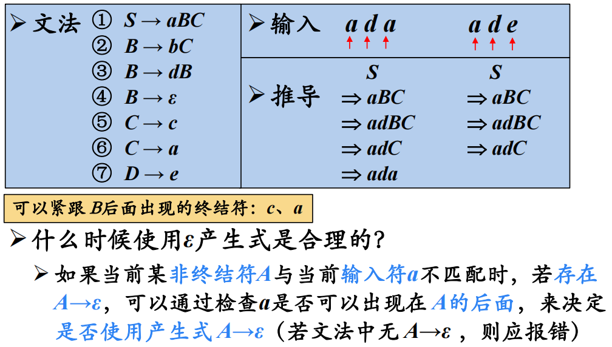
3.2 非终结符的后继符号集
可能在某个句型中紧跟在后边的终结符的集合，记为。
\mathrm{FOLLOW}(A) = \\{ a \mid S\Rightarrow^*\alpha Aa\beta, a \in V_T,\alpha, \beta\in(V_T\cup V_N)^\* \\}
如果 是某个句型的最右符号，则将结束符“\$”添加到 中。
3.3 产生式的可选集
产生式的可选集是指可以选用该产生式进行推导时对应的输入符号的集合，记为。
3.4 q_文法
- 每个产生式的右部或为，或以终结符开始
- 具有相同左部的产生式有不相交的可选集
q_文法不含右部以非终结符开始的产生式。
3.5 串首终结符集
串首终结符集：串首第一个符号，并且是终结符，简称首终结符。
给定一个文法符号串，的串首终结符集被定义为可以从推导出的所有串首终结符构成的集合。
如果α ⇒\* ε，那么也在中。
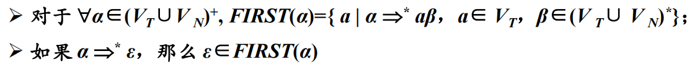
3.5.1 计算文法符号X的FIRST(X)
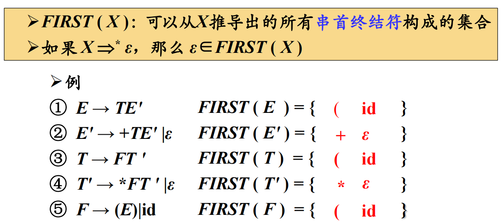
3.5.2 算法
不断应用下列规则，直到没有新的终结符可以被加入到任何集合中为止：
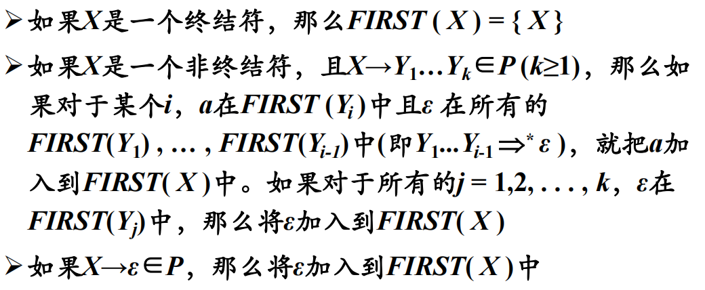
3.5.3 计算非终结符A的FOLLOW(A)
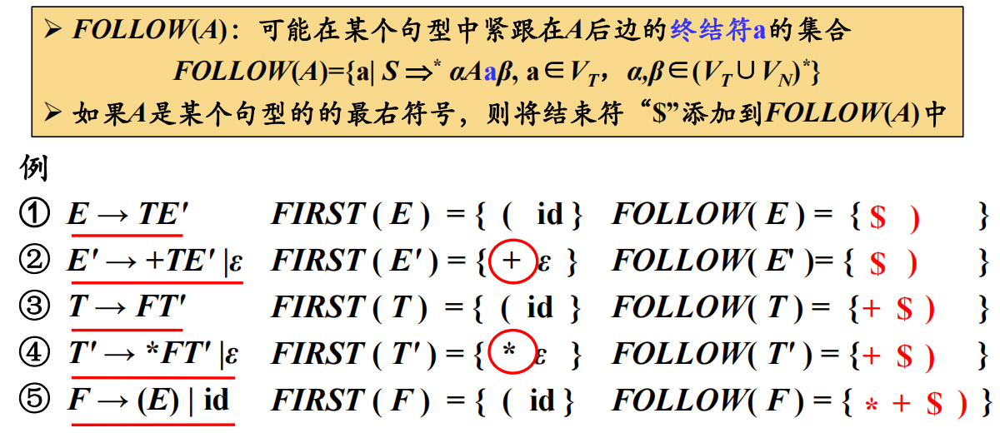
3.5.4 算法
不断应用下列规则，直到没有新的终结符可以被加入到任何集合中为止：
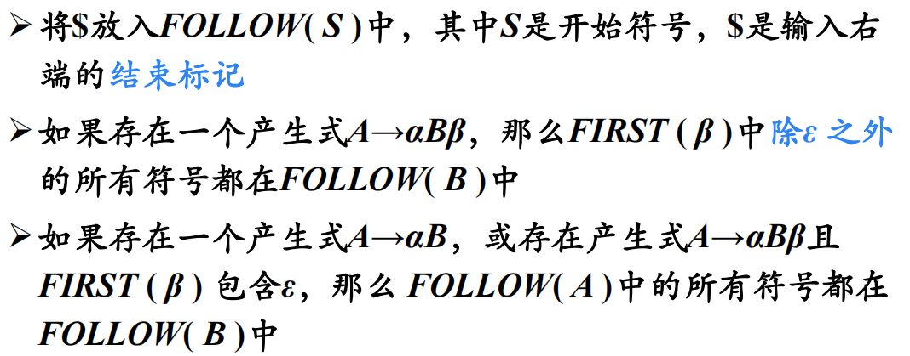
3.6 产生式的可选集的重新定义
产生式的可选集是指可以选用该产生式进行推导时对应的输入符号的集合，记为。
产生式的可选集：
- 如果 , 那么
- 如果 , 那么
3.7 LL(1)文法
一个上下文无关文法是LL(1)文法的充要条件是，对每个非终结符A的任意两个不同产生式A → α ，A → β ，满足：
其中，α、 β不能同时⇒*ε。
即：同一非终结符的各个产生式的可选集互不相交。
- 第一个“L”表示从左向右扫描输入
- 第二个“ L”表示产生最左推导
- “1”表示在每一步中只需要向前看一个输入符号来决定语法分析动作
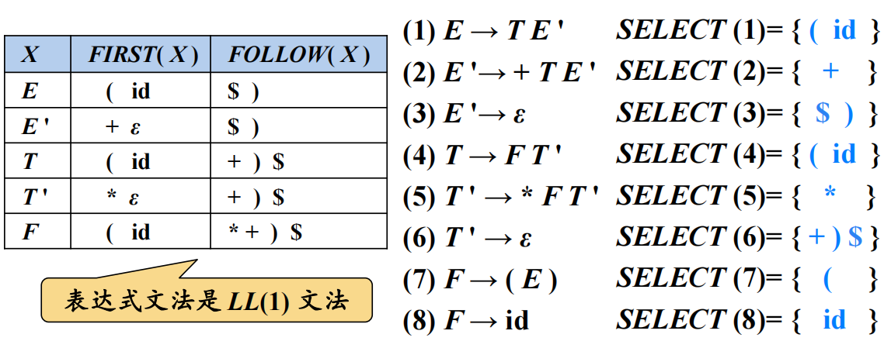
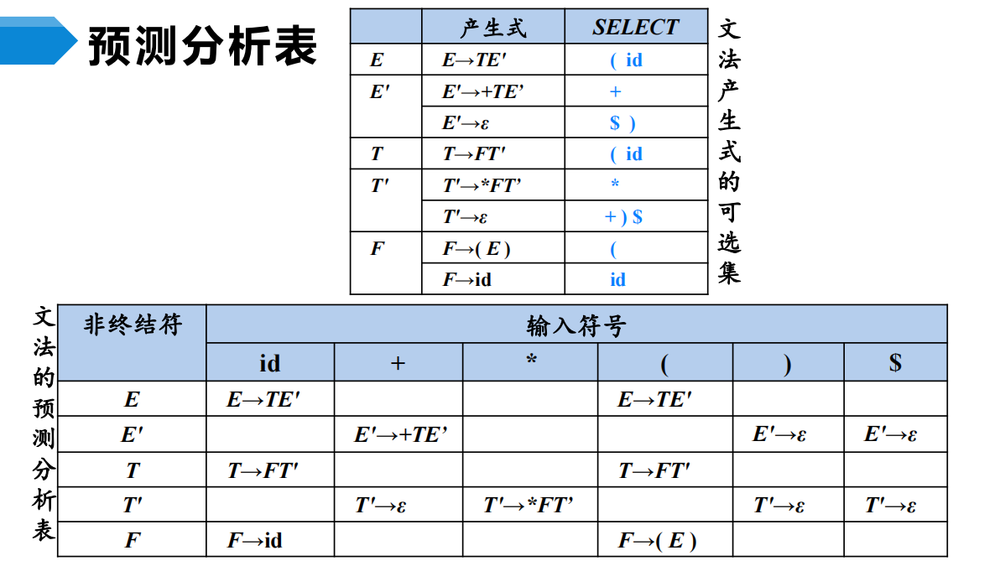
LL(1)文法的分析方法：
- 递归的预测分析法（递归下降LL(1)分析）
- 非递归的预测分析法（表驱动的预测分析）
4 递归的预测分析法
递归的预测分析法是指：在递归下降分析中，根据预测分析表进行产生式的选择。
根据每个非终结符的产生式和LL(1)文法的预测分析表，为每个非终结符编写对应的过程。
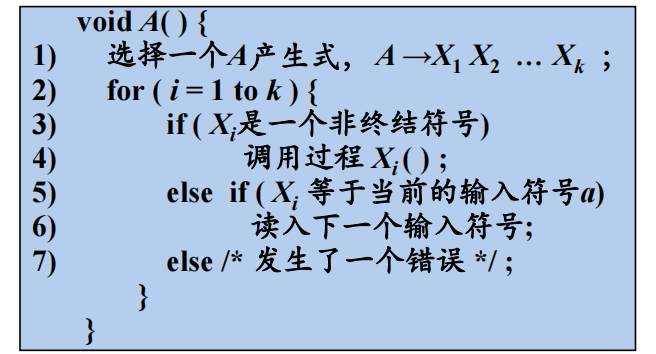
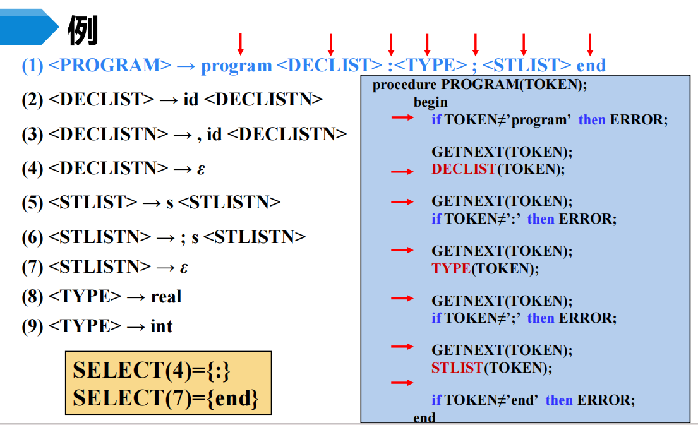
5 非递归的预测分析法
非递归的预测分析不需要为每个非终结符编写递归下降过程，而是根据预测分析表构造一个自动机，也叫表驱动的预测分析。
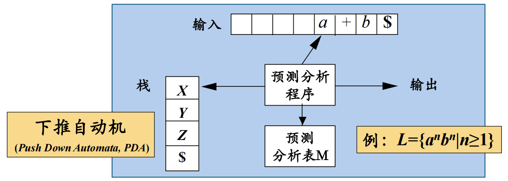
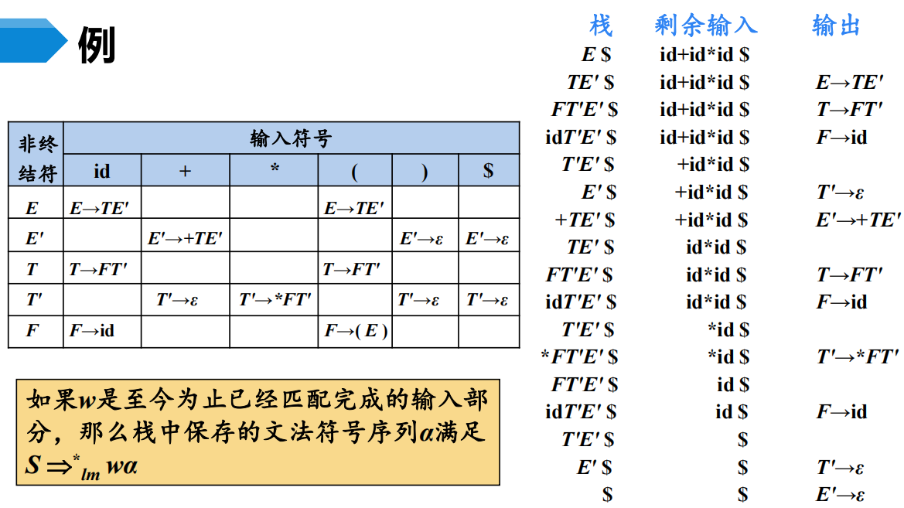
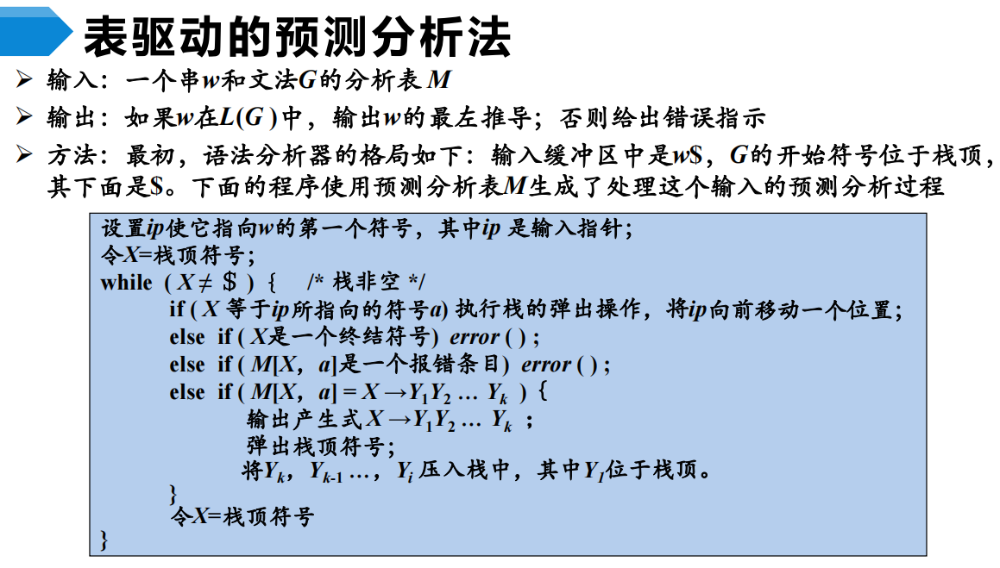
5.1 递归vs非递归
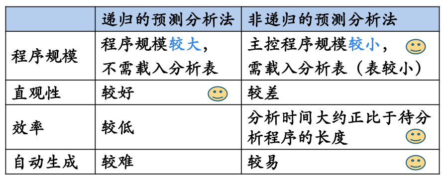
5.2 预测分析法实现步骤
- 构造文法
- 改造文法：消除二义性、消除左递归、消除回溯
- 求每个变量的FIRST集和FOLLOW集，从而求得每个候选式的SELECT集
- 检查是不是 LL(1) 文法。若是，构造预测分析表
- 对于递归的预测分析，根据预测分析表为每一个非终结符编写一个过程；对于非递归的预测分析，实现表驱动的预测分析算法
6 预测分析中的错误处理
两种情况下可以检测到错误：
- 栈顶非终结符与当前输入符号在预测分析表对应项中的信息为空
- 栈顶的终结符和当前输入符号不匹配
6.1 恐慌模式
忽略输入中的一些符号，直到输入中出现由设计者选定的同步词法单元(synchronizing token)集合中的某个词法单元。
其效果依赖于同步集合的选取。集合的选取应该使得语法分析器能从实际遇到的错误中快速恢复。例如可以把FOLLOW(A)中的所有终结符放入非终结符A的同步记号集合。
如果终结符在栈顶而不能匹配，一个简单的办法就是弹出此终结符。
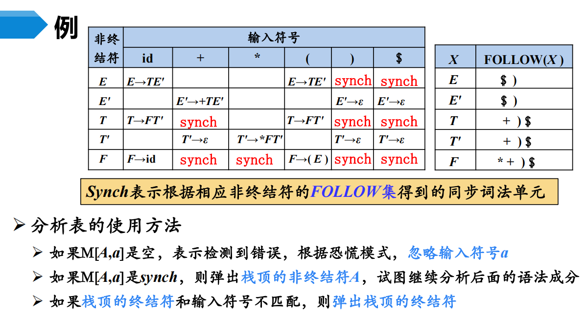
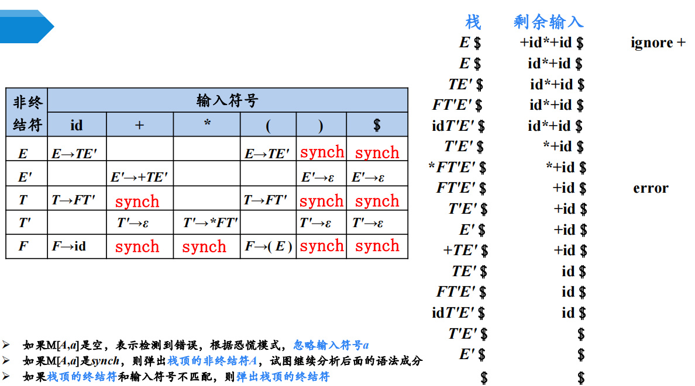
 微信
微信 支付宝
支付宝